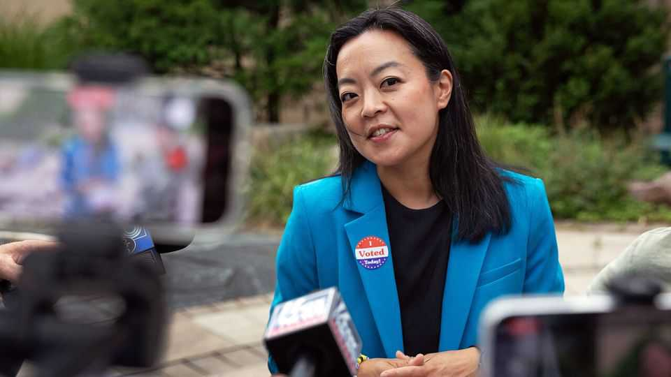

Democratic moderates get a surprising reprieve in Wisconsin
The party has narrowly dodged a socialist insurgency in a crucial swing state
Aug 13th 2026
Outside a polling centre in Milwaukee on the morning of August 11th, Sabley Sabin looks deflated. “I didn’t vote with my heart,” says the retired social worker, who has just cast her ballot in Wisconsin’s Democratic primary for governor. Calling mainstream Democrats “wusses”, she preferred Francesca Hong, an insurgent Democratic Socialist. But she voted for David Crowley. She reckons the moderate Milwaukee County executive has a better shot at building the coalition needed to win an election in a swing state like Wisconsin.
Other Wisconsinites seemed to share Ms Sabin’s calculation. For weeks polls had shown Ms Hong poised to win by double digits. In the end, Mr Crowley defeated her—though by a mere 3,783 votes. His victory suggests that appeals to moderation and electability still matter, especially in swing states. But Ms Hong’s near-win in spite of her considerable political baggage points to a Democratic coalition that remains angry, restless and increasingly receptive to populist-left candidates.
There were reasons to think Wisconsin might be fertile ground for a candidate like Ms Hong. The state has a long progressive tradition. Robert La Follette, a Wisconsin governor who assailed corporate power, helped start the Progressive Party in the early 20th century. Milwaukee, the state’s biggest city, elected a string of “sewer socialists” as mayor between 1910 and 1960. The moniker reflected the priority they gave to municipal improvements, such as public sanitation, rather than to class struggle.
Ms Hong, though, espoused views that were well outside the political mainstream. In an old tweet she called for Thanksgiving to be cancelled, saying it celebrated colonialism. In another she wrote that old white people at Culver’s, a fast-food chain, gave her “anxiety”. She had also expressed support for abolishing the police. When pressed on these comments, she struggled to explain them. The Democratic establishment was horrified. David Axelrod, a former adviser to Barack Obama, called the race a “slow-rolling car headed for a cliff”. Even some of the left’s biggest names kept their distance. Neither Bernie Sanders nor Alexandria Ocasio-Cortez endorsed Ms Hong.

Despite those liabilities, polling showed Ms Hong leading by 19 points in a crowded field of more moderate Democrats. Mr Crowley suspended his campaign on July 8th, saying he had no viable path to the nomination. An effort by establishment Democrats to consolidate behind Sara Rodriguez, the lieutenant governor, fell apart after she fired her campaign manager over financial mismanagement.
Only in the final stretch did the party’s powerbrokers get their act together. After Ms Rodriguez dropped out Mr Crowley re-entered the race and won the endorsement of Tony Evers, the Democratic governor, who had previously vowed to stay out of the primary. He campaigned on his experience, including three and a half years in the State Assembly, and his record running Milwaukee County since 2020. The manoeuvring was so chaotic that several voters at a Milwaukee polling station said they had not realised Mr Crowley had ever suspended his campaign.
Advertising probably helped him make up ground on Ms Hong, who did not buy a single ad on broadcast or cable television. The only spots in her favour came from Republican-linked groups seeking to boost the candidate they considered easiest to beat. By contrast, Mr Crowley and allied groups spent heavily on television. The Economist‘s analysis of the election results suggests that Ms Hong did much better than demographics would predict in northwest Wisconsin, where viewers mainly saw political ads from neighbouring Minnesota rather than Mr Crowley’s.
The polls may also have exaggerated how much ground Mr Crowley had to make up. For the second time in a week surveys vastly overestimated the lead of a left-wing candidate. On August 4th Abdul El-Sayed, a progressive seeking the Democratic nomination for Senate in Michigan, won by just one point, despite polling averages putting him 13 points ahead.
There is an intuitive explanation for such errors. Supporters of socialist-aligned candidates are unusually likely to be white, educated and highly engaged in politics—all characteristics associated with a propensity to take surveys. Just as pollsters have struggled to account fully for swathes of Donald Trump’s support in national elections, working-class “normie” Democrats may be underrepresented in primary samples. Yet the theory only goes so far. On the same day as Wisconsin’s election, a progressive, rather than a moderate, outperformed the polls in neighbouring Minnesota’s Democratic Senate primary. And surveys of other Democratic primaries with clear ideological divides have proved highly accurate. The safer conclusion is that primaries, in which electorates are smaller and preferences more fluid than in general elections, are devilishly hard to poll.
Whatever explains his comeback, Mr Crowley now has a chance to become the state’s first black governor. First he must defeat Tom Tiffany, a Republican congressman endorsed by Mr Trump. Mr Tiffany voted against certifying Joe Biden’s victory in 2020. That makes Democrats nervous about 2028: Wisconsin’s governor has a formal role in certifying the state’s presidential electors. Mr Crowley should probably have the edge given Democrats’ nationwide tailwind, but there has been little polling so far to test that expectation.
Mr Tiffany is already portraying his opponent as indistinguishable from Ms Hong. A day after the primary he reposted an interview in which Mr Crowley acknowledged that there was little difference between their policies. Still, there is relief among mainstream Democrats, who feared Ms Hong stood no chance against Mr Tiffany. After a sleepless night waiting for ballots to be counted, Joe Zepecki, a veteran Democratic strategist in the state, was effusive about Mr Crowley’s comeback. For decades to come, he says, “campaigns will sing the songs of David Crowley and his comeback for the ages.” ■
Stay on top of American politics with The US in brief, our daily newsletter with fast analysis of the most important political news, and Checks and Balance, a weekly note that examines the state of American democracy and the issues that matter to voters.